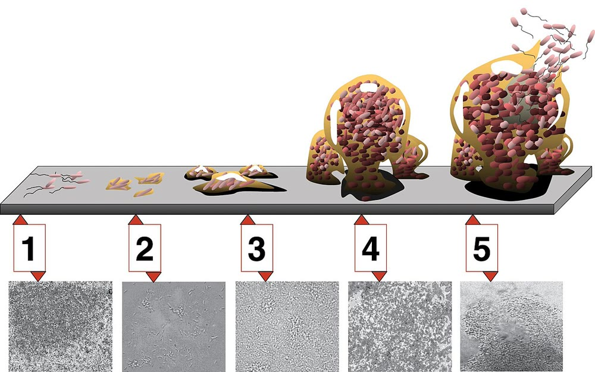

바이오필름 형성 제어 (Biofilm Formation Control)

| # | 원문 | 한국어 |
|---|---|---|
| 1 | 1 | 초기 부착 |
| 2 | 2 | 비가역적 부착 |
| 3 | 3 | 성숙 I |
| 4 | 4 | 성숙 II |
| 5 | 5 | 분산 |
쉽게 풀면
바이오필름은 세균들이 스스로 만든 끈끈한 물질 속에 뭉쳐서 표면에 달라붙어 사는 형태로, 배수관 안쪽에 생기는 미끈거리는 막을 떠올리면 된다. 이 막 안에 있는 세균은 소독제나 약물에 훨씬 잘 버티기 때문에 의료기기나 산업 설비에서는 골칫거리가 된다. 반대로 폐수 처리나 특정 생물공정에서는 바이오필름이 유용하게 쓰이기도 한다. 바이오필름 형성 제어는 상황에 맞게 이 막의 생성을 막거나 유도하는 기술이다.
왜 중요한가
바이오필름은 의료용 카테터나 임플란트 감염, 산업 설비 부식과 오염의 주요 원인이 되기 때문에 이를 막는 기술은 의료·산업 위생 분야에서 중요하게 다뤄진다. 반대로 폐수처리나 발효조에서는 원하는 미생물이 표면에 잘 정착하도록 바이오필름 형성을 촉진하는 전략도 활용된다. 의료기기 표면이나 산업 설비 배관에 형성된 생물막은 만성 감염과 부식, 오염의 원인이 되므로, 형성 초기 단계에서부터 부착을 억제하는 표면 처리 기술이 중요하게 다뤄진다.
핵심 정리
바이오필름(미생물막)은 서로 달라붙은 미생물 군집으로, 표면에 부착하는 경우가 많다. 미생물은 스스로 만든 다당류, 단백질, 지질, DNA로 이루어진 끈적한 기질 안에 묻혀 있다.
예시로 보기
이 기질은 영양분을 공유하게 하고, 건조, 독소, 항생제, 포식자, 숙주 면역으로부터 미생물을 보호한다. 3차원 군집 구조 때문에 '미생물의 도시'라고도 부른다. 산업 시설의 배관과 병원 기구 표면에서는 문제가 되고, 폐수 처리에서는 유용하게 쓰이기도 한다.
자주 하는 오해
- 바이오필름은 산업 시설과 병원 등에서 활용되기도 하고 문제가 되기도 한다. 맥락에 따라 억제할 대상일 수도, 활용할 대상일 수도 있다.
- 세포가 기질에 둘러싸여 있어 약제와 면역으로부터 보호받는다는 점이 제어를 어렵게 하는 배경이다.
논문에서는 이렇게 쓰입니다
예시 문장
아래 예문은 용어의 쓰임을 보이려고 만든 것으로, 실제 논문 문장이 아니다.
항균 펩타이드로 표면을 코팅해 카테터 소재 위의 바이오필름 형성을 크게 줄였다는 내용이다.
생물반응기 내 질산화 세균의 정착을 높이기 위해 바이오필름 형성 제어 전략을 적용했다는 예문이다.
조금 더 깊게 보면
바이오필름은 초기 부착, 비가역적 부착, 성숙 I(미세군집과 EPS 기질 형성), 성숙 II, 분산의 다섯 단계를 거쳐 형성되며, 제어 전략으로는 표면 개질, 쿼럼센싱 억제, 효소를 이용한 EPS 분해 등이 활용된다. 형성 정도는 결정자주법이나 공초점현미경 관찰로 평가하는 경우가 많다. 생물막 내부의 세포는 세포외 고분자물질(EPS) 기질에 둘러싸여 항생제나 소독제의 침투를 물리적으로 방해받기 때문에, 부유 상태 세균보다 훨씬 높은 내성을 나타내는 경우가 많다.
주의할 점
바이오필름 내 세균은 부유 상태의 세균과 생리적 특성이 크게 다르므로, 일반 소독제나 항생제 농도로는 효과가 제한적일 수 있어 별도의 제어 전략이 필요하다.
참고 문헌
- Wikipedia contributors. (n.d.). Biofilm. Wikipedia (English).
- 위키백과 기여자. (n.d.). 미생물막. 위키백과(한국어판).